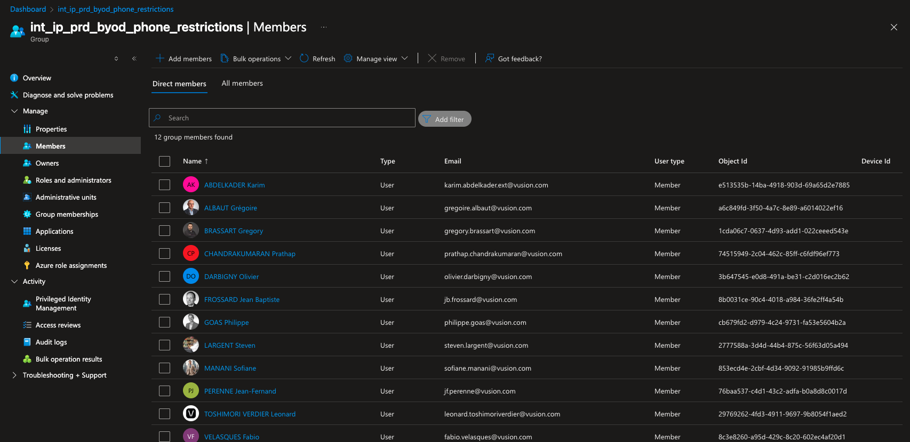

Mission 2
Enrôlement d’un appareil Android BYOD avec profil professionnel
1. Présentation générale
Cette mission porte sur l’enrôlement d’un appareil Android personnel dans un environnement professionnel à l’aide de Microsoft Intune et de l’application Company Portal.
L’objectif est de permettre à un utilisateur d’accéder aux ressources de l’entreprise depuis son téléphone personnel, tout en séparant clairement les données personnelles et les données professionnelles.
Cette configuration repose sur la création d’un profil professionnel Android, également appelé Android Work Profile. Ce profil permet d’isoler les applications, les comptes, les paramètres et les données liés à l’entreprise.
2. Contexte de la mission
Dans le cadre du support informatique, certains utilisateurs souhaitent utiliser leur téléphone Android personnel pour accéder à leurs emails professionnels, aux applications métiers, au Wi-Fi d’entreprise et aux ressources internes.
Pour répondre à ce besoin, l’appareil doit être inscrit dans Microsoft Intune via l’application Intune Company Portal. Cette procédure permet de gérer uniquement la partie professionnelle du téléphone, sans accéder aux données personnelles de l’utilisateur.
Cette mission consiste donc à accompagner l’utilisateur dans l’enrôlement de son appareil Android personnel en mode BYOD, afin de garantir un accès sécurisé aux services de l’entreprise.
3. Objectifs de la procédure
L’enrôlement d’un appareil Android BYOD permet de :
- créer un profil professionnel sur le téléphone Android
- activer ce profil professionnel
- configurer les paramètres nécessaires à l’accès aux ressources de l’entreprise
- installer les applications professionnelles autorisées
- sécuriser l’accès aux emails, aux applications et aux données professionnelles
- séparer les données personnelles des données professionnelles
4. Prérequis avant l’enrôlement
4.1. Vérification du compte utilisateur
Avant de commencer la procédure, il est nécessaire de vérifier que l’utilisateur dispose bien d’un compte professionnel actif et autorisé à utiliser l’enrôlement BYOD Android.
L’utilisateur doit être ajouté au groupe suivant :
int_ip_prd_byod_phone_restrictions
Ce groupe permet d’appliquer les restrictions et les règles nécessaires à l’enrôlement d’un téléphone personnel dans l’environnement de l’entreprise.

4.2. Installation de l’application Company Portal
L’utilisateur doit installer l’application Intune Company Portal depuis Google Play. Cette application est utilisée pour inscrire l’appareil, gérer l’accès aux ressources professionnelles, installer les applications de travail et obtenir de l’assistance informatique.
L’application Company Portal est indispensable pour démarrer la procédure d’enrôlement.

5. Lancement de l’enrôlement
Étape 1 – Vérification du compte principal Android
Avant de lancer l’inscription, il faut s’assurer que l’utilisateur est bien connecté au compte principal de son appareil. L’enrôlement du profil professionnel n’est pas pris en charge sur les comptes secondaires Android.
Étape 2 – Ouverture de Company Portal
Ouvrir l’application Intune Company Portal sur le téléphone Android.
L’utilisateur doit ensuite se connecter avec son compte professionnel ou scolaire.
Étape 3 – Démarrage de la configuration
Sur l’écran Company Access Setup, l’application affiche les différentes tâches nécessaires pour inscrire l’appareil.
L’utilisateur doit lire les informations affichées, puis appuyer sur BEGIN afin de commencer la procédure d’enrôlement.
6. Informations de confidentialité
L’application affiche ensuite un écran d’informations de confidentialité. Cette étape permet d’expliquer à l’utilisateur ce que l’entreprise peut voir et ce qu’elle ne peut pas voir sur son appareil personnel.
Le principe du profil professionnel est de séparer les données de l’entreprise des données personnelles. L’entreprise peut gérer les applications et les données professionnelles, mais ne doit pas accéder au contenu personnel de l’utilisateur.
Après lecture des informations, l’utilisateur doit appuyer sur CONTINUE.
7. Création du profil professionnel Android
Étape 1 – Acceptation des conditions Google
L’utilisateur doit lire et accepter les conditions Google relatives à la création d’un profil professionnel Android. L’apparence de cet écran peut varier selon la version du système Android utilisée.
Pour continuer, l’utilisateur doit sélectionner Accept & continue.
Étape 2 – Politique de confidentialité Samsung Knox
Si l’appareil utilisé est un Samsung, une étape supplémentaire peut apparaître concernant la politique de confidentialité Samsung Knox.
Dans ce cas, l’utilisateur doit sélectionner Agree afin de poursuivre la configuration.

Étape 3 – Création du profil de travail
L’appareil configure ensuite le profil professionnel. Cette étape peut prendre quelques minutes. Il est important de ne pas fermer l’application pendant la configuration.
Une fois le profil créé, l’utilisateur doit sélectionner Next.

8. Confirmation de la création du profil
Une fois le profil professionnel créé, l’écran de configuration Company Portal confirme que cette étape est terminée.
L’utilisateur doit appuyer sur CONTINUE afin de passer à la tâche suivante de l’enrôlement.

9. Vérification des paramètres de l’appareil
L’application Company Portal vérifie ensuite les paramètres requis par l’entreprise. Si certains paramètres ne sont pas conformes, l’application propose de les corriger.
Si une correction est nécessaire, l’utilisateur doit appuyer sur RESOLVE. L’application ouvre alors le paramètre concerné directement sur l’appareil.
Une fois les paramètres corrigés, l’utilisateur doit revenir dans Company Portal et appuyer sur CONFIRM DEVICE SETTINGS.


10. Fin de l’enrôlement
Lorsque la configuration est terminée, l’utilisateur est renvoyé vers la liste des tâches d’installation. Chaque tâche doit afficher une coche verte, ce qui confirme que l’enrôlement a été correctement réalisé.
L’utilisateur peut ensuite appuyer sur DONE.
À ce stade, l’appareil Android personnel dispose d’un profil professionnel fonctionnel et peut accéder aux ressources autorisées par l’entreprise.

11. Installation des applications professionnelles
Après l’enrôlement, l’utilisateur peut être invité à ouvrir le Google Play Store professionnel afin d’installer les applications recommandées.
S’il n’est pas prêt à installer les applications immédiatement, il peut le faire plus tard depuis le Play Store présent dans le profil professionnel.
Les applications disponibles peuvent également être consultées depuis le menu de Company Portal, dans la section Get Apps.


12. Disponibilité d’Android Enterprise
Les profils professionnels Android sont disponibles uniquement dans les pays et régions où Android Enterprise est pris en charge.
Si Android Enterprise n’est pas disponible dans le pays ou la région de l’utilisateur, Company Portal ne pourra pas configurer le profil professionnel sur l’appareil.
Dans ce cas, l’utilisateur doit contacter le support informatique afin d’identifier une autre méthode d’accès aux ressources professionnelles.
13. Mise à jour des services Google Play
Si la version des services Google Play est obsolète, l’enrôlement peut échouer ou être bloqué. Il est donc recommandé de vérifier que les services Google Play sont bien à jour avant de commencer la procédure.
L’utilisateur peut ouvrir Google Play sur son appareil afin de rechercher les mises à jour disponibles.
14. Résultat attendu
À la fin de cette procédure, l’appareil Android personnel est correctement inscrit dans Microsoft Intune. Le profil professionnel est actif et l’utilisateur peut accéder aux ressources de l’entreprise de manière sécurisée.
Les données personnelles restent séparées des données professionnelles, ce qui permet de respecter le principe du BYOD tout en maintenant un niveau de sécurité adapté à l’environnement professionnel.